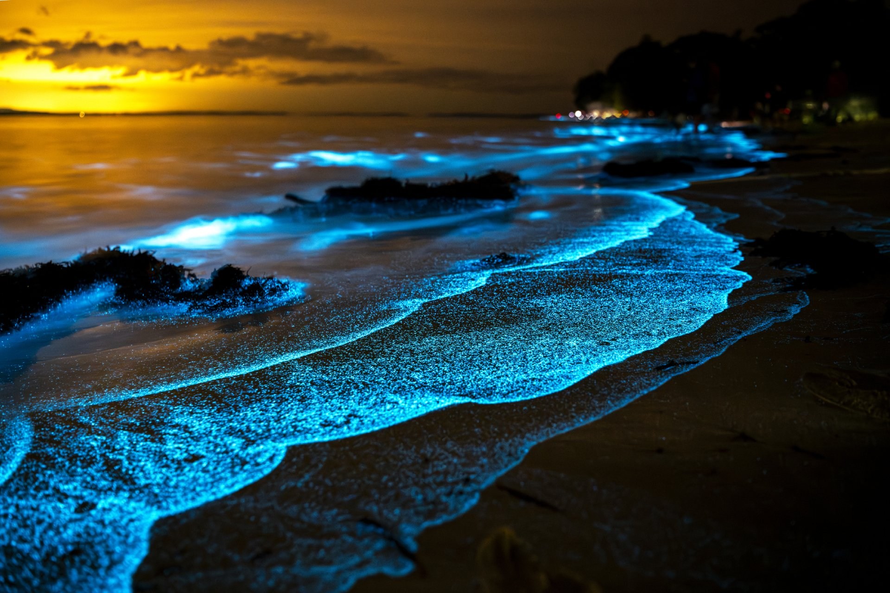

Living light
Some plankton, including certain dinoflagellates, can emit blue light when disturbed by movement.
In some coastal waters, tiny organisms can produce flashes of blue light, turning movement in the dark into something almost otherworldly.
Discover the science ↓Bioluminescence is the production of light by a living organism through a chemical reaction. In the ocean, it can be used for defence, communication, or attracting prey.
Some plankton, including certain dinoflagellates, can emit blue light when disturbed by movement.
Bioluminescence commonly involves a light-producing molecule and oxygen, with the exact chemistry varying among organisms.
Blue light travels relatively well through seawater, which is one reason it is common in marine bioluminescence.

The glow is real, but it depends on the species, local conditions, and the amount of light pollution. It is not present on every beach every night.
Marine environments are delicate. Follow local guidance, avoid disturbing wildlife, and never assume a glowing-water event is safe for swimming.
Next wonder: Magnetic Hills ↗